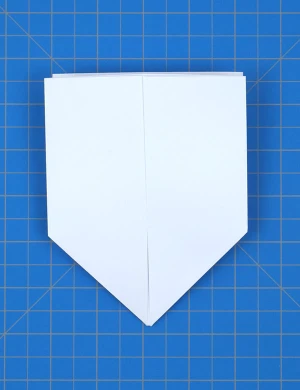
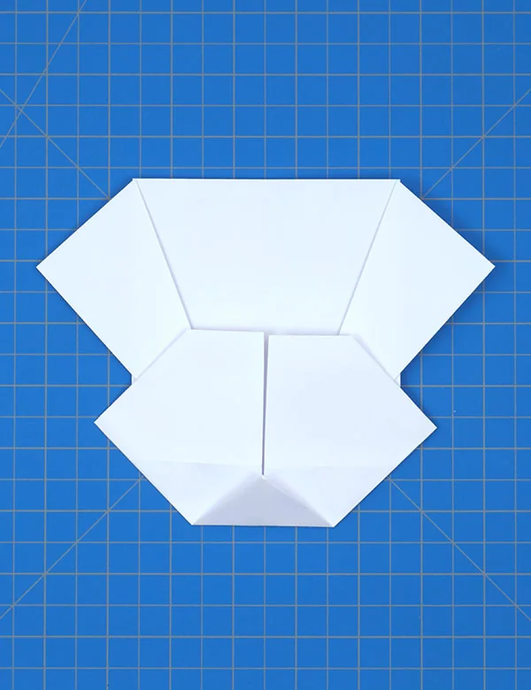
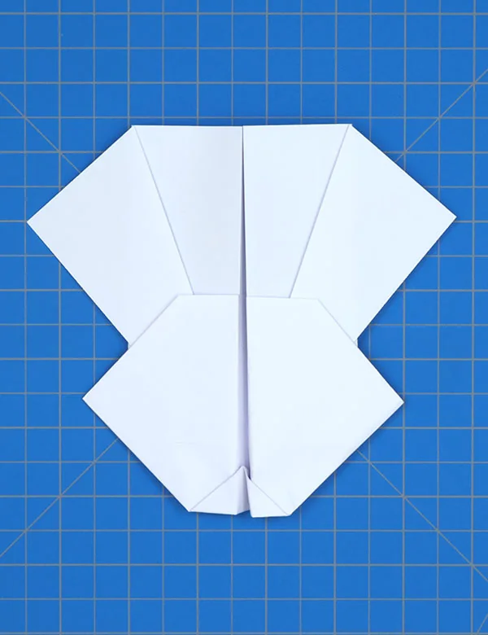
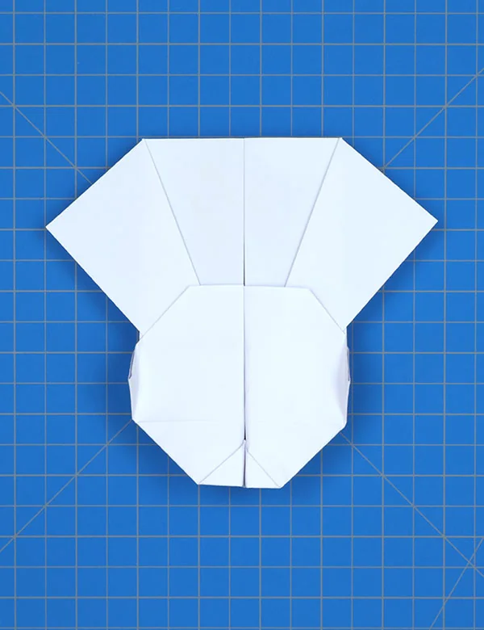
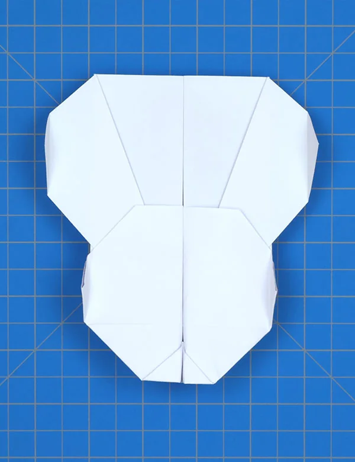

1Step 1
Crease the sheet lengthwise, then open it flat.
Crease the sheet lengthwise, then open it flat.

Bring both sides into the middle.

Fold the other way with the folded edge at the bottom; keep the earlier flaps on the outside.

Fold both bottom corners into the middle to make a triangle, then open them.

Accordion-tuck the corners into the middle, hiding the triangle pieces inside.

Fold the front piece down aligned with the outer corner, press a firm crease, then fold it back up to match step 5.

Reach inside the two vertical folds and pull them apart. At the same time, fold down along the crease made in step 6 as shown in the guide.

Fold it all the way down along that crease and flatten out the wings as shown in the guide.

Flip it over and fold the top two middle flaps diagonally to the outside as shown in the guide.

Fold the bottom left edge up to the middle. Repeat with the right side as shown in the guide.

Fold the bottom point up. It will naturally want to fold along a line formed by the inner layers as shown in the guide.

Fold the entire paper airplane in half as shown in the guide.

Optional lock-fold to keep it held together: Reach inside and fold the tip of the small triangle piece over to one side as shown in the guide.

Fold out both sides to form the wings. The fold should be parallel with the middle crease and about one third the length of the front of the airplane as shown in the guide.

Fold the cat's ears up on both sides as shown in the guide.

Fold up the wingtips in the back of the airplane. If using A4 sized paper, you may want to fold these down instead as shown in the guide.
With a calm day and a level throw, expect only a short distance, since this design is not built for range. Wind, paper weight, and small crease errors all change the result.
A well-trimmed Ear-Wing Glider should hold a very brief flight; the design is not aimed at hang time. Launching from a higher spot and keeping the wings level will extend it.
It is best for long floating glides. Folding skill is advanced. Use Letter & A4, 16 steps, hands only.
Launch softly at a slight upward angle, ideally from a high point, and let the plane glide instead of forcing it.